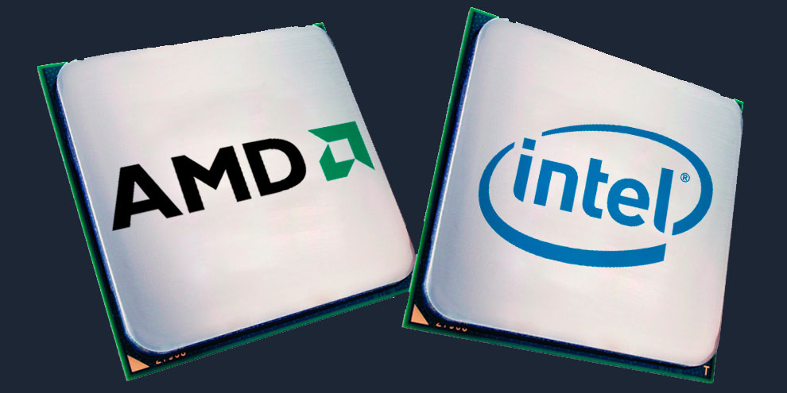

Следует отметить, что среди всех компаний на рынке процессоров осталось всего два лидера, которые были представлены Intel и AMD.
Они обе могут занимать лидирующее положение на рынке, потому что они дали большой толчок для развития новых технологий для производства
качественных процессоров.
До выхода процессоров Ryzen о весомой доле AMD в сегменте центральных процессоров всерьёз можно было говорить
на рубеже 2004-2006 годов. Тогда компания выпустила крайне удачное семейство Athlon 64, развившее успех Athlon XP и вырвавшее у Intel более четверти мирового рынка.
Этот результат до сих пор считается рекордным для компании – хотя, по некоторым оценкам, процессорам Ryzen уже удалось его превзойти.
Лучший процессор Intel
Лучший процессор Amd